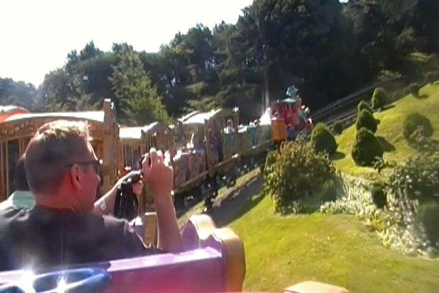

| |
Casey Jr., Le Petit Train du Cirque Review

We're here at Disneyland Paris to ride Casey Jr., Le Petit Train du Cirque . Now all the Disney Parks have a Casey Jr. ride. However, the one at Disneyland Paris is actually a powered coaster. So that means that of course, some people will count this pseudo-credit. Sigh. I've still never ridden teh California Casey Jr, despite having been to Disneyland many different times. But because some people I was with counted this, here I am. We get in the cars (knowing who we are, we need to be caged) and off we go. We go around this curved hill at a slow speed, but also at an unnatural speed, proving that this is a powered coaster and NOT A CREDIT!!! We then head around a dip, and then head up this curved hill. We aren't going fast, but at the same time, we never slow down or are effected by Gravity. So hey. We do get this nice view of the storybooks around us, and all the gardens around us are very pretty. We roll around a dip, not gaining or losing speed, just chugging along at the same speed. We head over a bridge, wave hello to the Storybook Canals down below, and pass by the Swiss Alps. You know, the real ones are pretty close. We head around a hill, pass by a castle, turn around a banked turn, and we're still just going. You know, even among pseudo-credits, this is slow and dull. So I'm just gonna wrap this up. Head around a turn, over another bridge, into the woods, THE END. Not only does this ride not count as a credit, but even amongst Powered Coasters, it still sucks. There are some really cool powered coasters at Europa Park and Heide Park and this isn't nearly as good. Can I skip this ride? I think I can! I think I can! I think I can! I think I can! I think I can!
2/10
Location: Disneyland Paris
Opened: 1994
Built by: Mack
Last Ridden: July 02, 2012
Casey Jr., Le Petit Train du Cirque Photos

Home
|